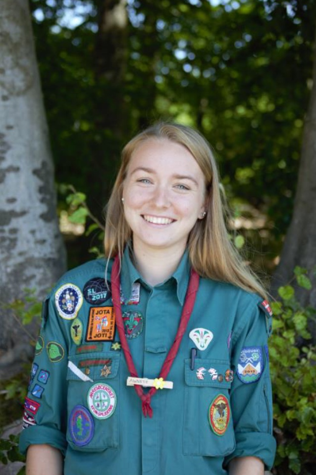
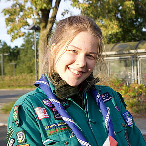
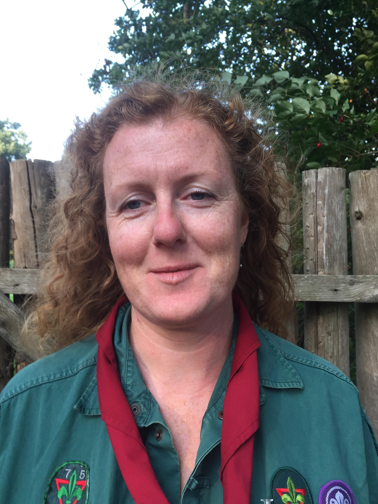
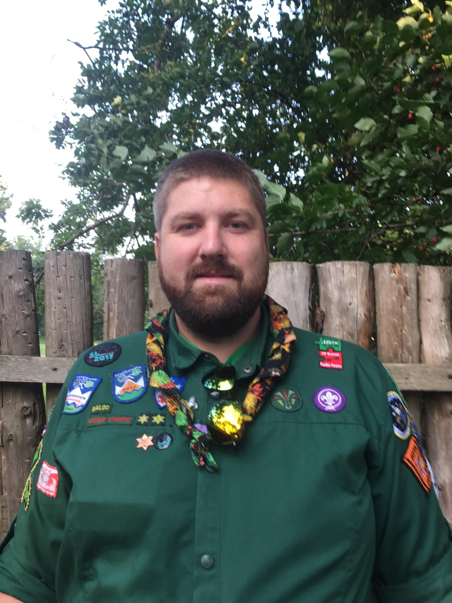
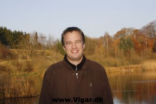
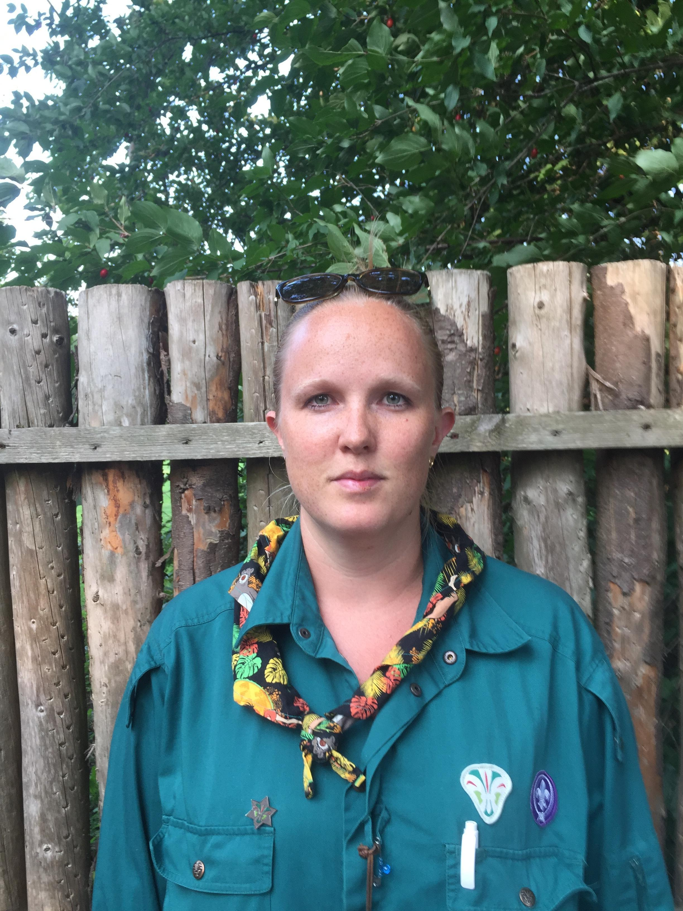
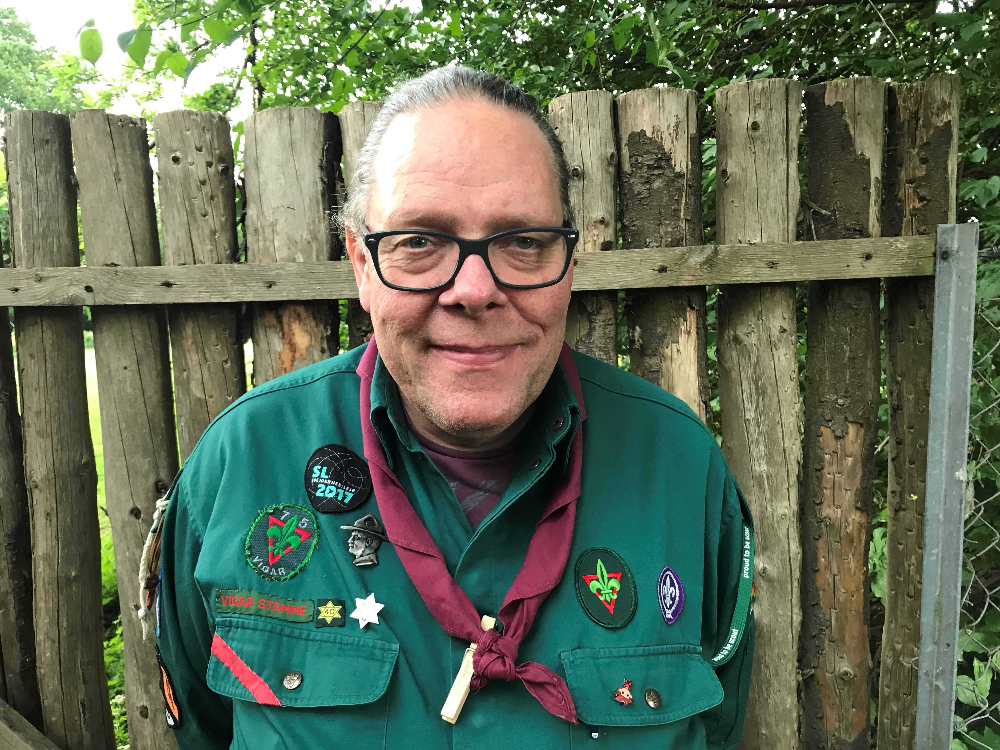
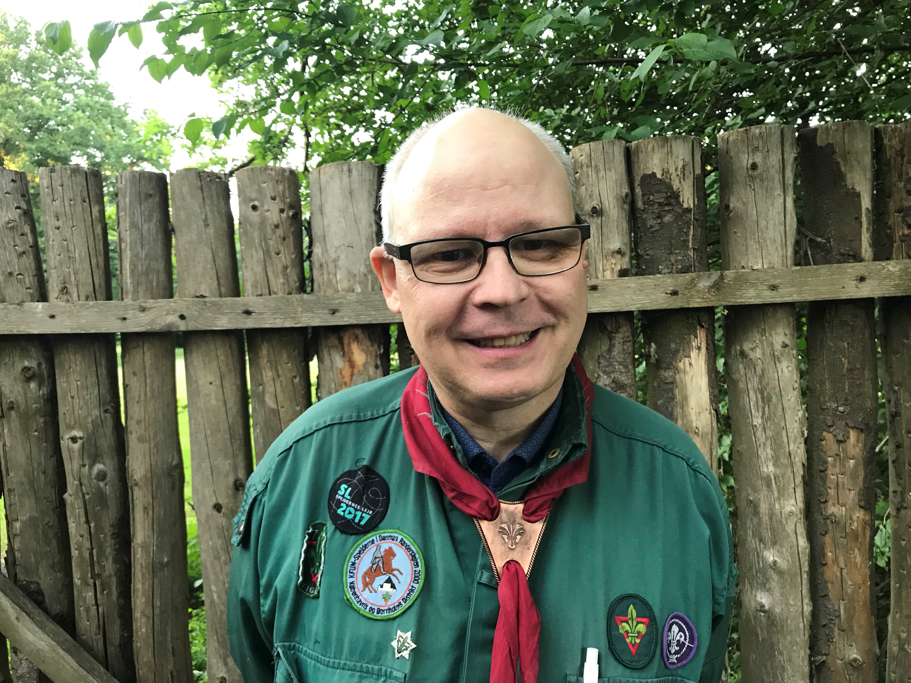
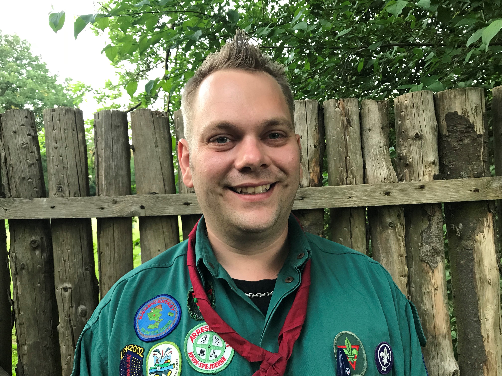

Enhedslederne er os der afholder de ugentlige møder hos, bæverne, ulvene, spejderne og familiespejd.
Vi tager også på weekendture og bruger hver sommer en uge af vores ferie på at tage på sommerlejr.
Alt dette gør vi frivilligt og ulønnet, fordi vi kan li' det.

Agnete Rønne Gruppeleder, og Bæverleder

Julie Kjærby Gruppeassistent og Tropleder

Susan Løvstad Holdt Familiespejd' og Bæverleder - (holder pause)

Carsten Andersen Familiespejd' og UlvelederAndreas B. Larsen Familiespejd' leder

Thomas Knudsen Bæverleder
Jens Peter Jørgensen BæverlederKarina T. Mortensen Bæverleder

Jeanette Schwab Andersen Ulveleder

René Kreilgaard Tropleder

Lars Frederiksen Tropleder og Webmaster

Lenni Steffensen Tropleder